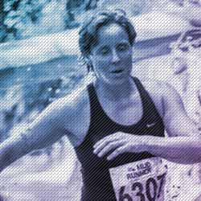

<div class="wrapper">
    <div class="body">

        <section id="head">
            <div class="title">
                <h1>Run… and Roll</h1>
                <div class="sub-title"><strong>Sore knees, aching hips, not running due to injury?</strong></div>
            </div>
        </section>

        <section id="intro">
            <h2>Workshops</h2>
            <div class="intro-lead">
                The “Run… and Roll” workshop, with practical demonstrations, and the latest evidence, will help you:
            </div>
            <div class="intro-list left">
              <ol>
                <li>Manage “niggles”</li>
                <li>Learn why and how to use the foam roller </li>
              </ol>
            </div>
            <div class="intro-list right">
              <ol start="3">
                <li>Understand running “form”</li>
                <li>Find out if and when running is bad for you</li>
              </ol>
            </div>
        </section>

        <section id="location">
            <h5>Set a Date</h5>
            <h1>Saturday<br />10th February 2017</h1>
            <p><span>Time:</span> 12:30pm - 3:30pm <span> | </span> <span>Location:</span> <a href="https://www.google.co.uk/maps/place/GL3+Community+Hub/@51.8869033,-2.1907977,17z/data=!3m1!4b1!4m5!3m4!1s0x48710457438cf8e5:0xd14d2cd10301dee2!8m2!3d51.8869!4d-2.188609" target="_blank">GL3 Community Hub</a></p>
        </section>

        <div id="map_canvas"></div>

        <section id="coaches">
            <h1>The Coaches</h1>
                <div class="grid-item">
                    
                    <h2>Julianne<br />Jameson</h2>
                    <p>Physiotherapist specialising in assessing and training runners. She has trained in running analysis and strength and conditioning. Always reading the latest research or looking at the value of the latest running fad, you could say she is obsessed by all things running!</p>
                    <p>She has run several road and trail marathons, 5k and 10k races and in July 2017 ran the 103 mile Cotswold Way in one go!  Jane was with her all the way too, with massage and support - what a team!</p>
                </div>
                <div class="grid-item">
                    
                    <h2>Jane<br />Rackham</h2>
                    <p>Jane is an accomplished Ironman triathlete and multi-day marathon runner. Along side her Sports and Remedial Massage she specialises in Myofascia release using the ROSSITER system. A Level 4 Coach (one of only 9 in the country). Working in the health and fitness industry for over 20yrs as a Gym Instructor and teaching Group Exercise Classes brings a wealth of experience, something that's hugely important in helping people 'Believe to Achieve'.</p>
                </div>
        </section>

        <section id="places">
            <div class="col-width">
                <h2>Grab your place...</h2>
                <p>Places are limited to <strong>20</strong> to ensure you get a chance to talk to the experts.  However we can take more names for future sessions. The cost is</p>
                <h1>£45</h1>
                <p>Please bring your own mats and foam rollers if you have them.  Don’t worry if you don’t as we have spares!  This will be a practical session with a chance for a cuppa and Q&#38;A afterwards.</p>

                <script src="https://www.commencepayments.com/v2/commence.js"
                data-payment-method="credit-card"
                data-amount="4500"
                data-currency="GBP"
                data-description="20 classes for Run and Roll February 2018"
                data-name="Run and Roll"
                data-image="https://api.typeform.com/v0/form/xulL58/fields/19706176/blob/0411103eea09-RunandRollLogo.png?key=0f0704fb23802ca3a69d53642c18f47be96e3ab8"
                data-billing-address="true"
                data-key="pk_live_Xd3gR8PfEnkLfRqg0uwzMcOn"></script>

                <p class="terms"><small>If you need to cancel please let us know by email up to two weeks prior to the workshop date.  A refund can be made only if there are clients on our waiting list ready to fill your place. If there are no clients on the waiting list, or if you cancel within two weeks of the workshop, we regret that a refund can not be returned. Contact <a href="mailto:jane@therackhameffect.com" target="blank">Jane Rackham</a> if wish to cancel.</small></p>
            </div>
        </section>

        <section id="footer">
            <h2>Run… and roll<br />is brought to you by…</h2>
            <div class="runology">
                <a href="http://www.runology.fit" target="_blank"></a>
            </div>
            <div class="rackham">
                <a href="http://www.therackhameffect.com" target="_blank"></a>
            </div>
        </section>

        <div id="trans">
            <p>Website design and development <a href="http://www.transition-creative.co.uk" title="Transition Creative is a small design agency focusing on web design, branding, logo design, graphic design &#38; more."><strong>Transition Creative</strong></a></p>
        </div>

    </div>
</div>
